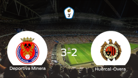
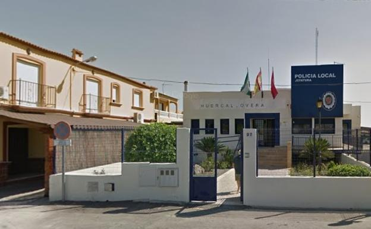
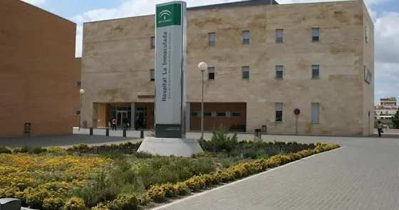

.webp)
Huércal-Overa es una villa y un municipio español de la provincia de Almería, dentro de la comunidad autónoma de Andalucía. Su extensión es de 318 km² y cuenta con una población de 19.432 habitantes según el Instituto Nacional de Estadística a 31 de diciembre de 2020 y con una densidad poblacional de 61,10 hab/km2.Situada en la cuenca del río Almanzora, es la capital de la comarca del Levante Almeriense, y limita con la Región de Murcia. Huercal Overa cuenta con numerosas pedanias como La Concepción, Rambla Grande, Santa Bárbara, Los Menas, Los Navarros, El Pilar, (configuran Overa), Santa María de Nieva, Almajalejo, San Francisco, El Saltador, Las Norias, Goñar, Úrcal, Las Labores, El Puertecico, La Hoya, Fuente Amarga, Gibiley, La Parata, La Perulera, Pedro García, Los Carmonas, Las Piedras, La Loma, Las Minas, La Fuensanta y La Atalaya.
La Deportiva Minera consigue la victoria en casa frente al Huércal-Overa (3-2) 
Detenidoun joven de 19 añosen Huércal-Overa por un delito de violencia de género. Los agentes recibieron llamada del servicio de emergencias 112, en la que se requería intervención en un domicilio particular en la Calle Doctor Jiménez Díaz por conflicto familiar. Una vez en el mismo y tras intervenir, la supuesta víctima manifiesta a los agentes que en el día de ayer había sido agredida por su compañero sentimental, quién en ese momento se encuentra en la vivienda. 
La UCI del Hospital La Inmaculada está ya al máximo su capacidad. La unidad de cuidados intensivos del Hospital La Inmaculada de Huércal-Overa se encuentra ya al máximo de su capacidad, al estar ocupadas con pacientes covid en estado grave las ocho camas de las que dispone la planta, según ha informado a LA VOZ fuentes de la dirección del centro, que también han indicado que la ocupación en planta ronda "el 80%". 
Huércal-Overa remodela su antigua estación.
La antigua Estación de Ferrocarril de Huércal-Overa pasará a ser un epicentro de ocio y de deporte al aire libre gracias a una acción conjunta entre el Ayuntamiento y la Diputación Provincial de Almería y que está enmarcada dentro de los Planes Provinciales de Inversión Municipal.